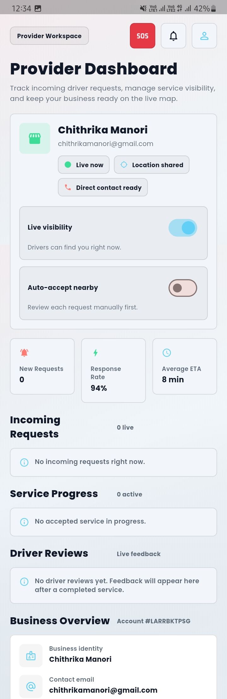

01
Find Nearby Help
Scan within a 2km radius and identify available mechanics in seconds.
DriveMate helps stranded drivers reach nearby mechanics faster with live location sharing, SOS broadcasting, provider discovery, and a streamlined mobile workflow built for emergency conditions.
Traditional roadside support is slow, opaque, and difficult to coordinate. DriveMate turns that process into a live service flow with visibility for both drivers and providers.
Scan within a 2km radius and identify available mechanics in seconds.
Broadcast an emergency service request with a single action from the app.
Follow the provider arrival in real time and review the completed service.
The project combines a mobile client, cloud-backed data flow, and geolocation features into a focused roadside assistance platform.
Cross-platform mobile development with a single codebase and responsive UI.
Authentication, real-time data, and scalable backend support for live operations.
Location intelligence, route visualization, and real-time responder tracking.
Real screens from the DriveMate app across the driver journey, live map flow, and provider operations view.

The flow is deliberately simple so a driver can request help under stress with minimal friction.
DriveMate captures the current location and prepares nearby service discovery.
The request is sent to providers in range with the relevant incident context.
The driver sees the mechanic movement and progress on the map in real time.
The service is resolved, recorded, and available for feedback and history.
Download the latest Android APK for DriveMate and install it on your Android device to try the roadside assistance experience.
Download App If Android warns about unknown sources, allow the install for this APK.